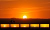

sunset

Has synonym(s): sundown
Definition: Sunset, also known as sundown, is the daily disappearance of the Sun below the horizon due to Earth's rotation. As viewed from everywhere on Earth (except the North and South poles), the equinox Sun sets due west at the moment of both the spring and autumn equinoxes. As viewed from the Northern Hemisphere, the Sun sets to the northwest (or not at all) in the spring and summer, and to the southwest in the autumn and winter; these seasons are reversed for the Southern Hemisphere.
Source: Wikipedia
Wikipedia Page (Something wrong with this association? Let us know.)
Wikidata Page (Something wrong with this association? Let us know.)